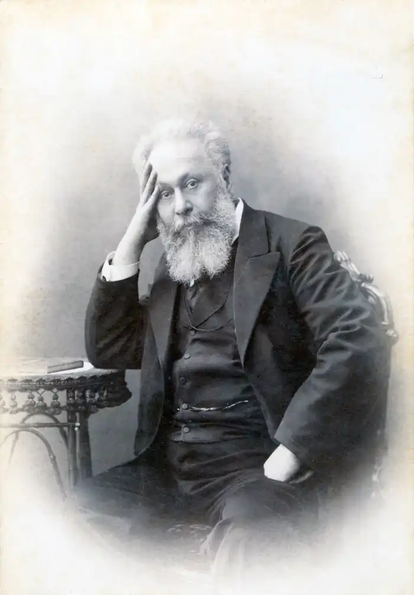

ЦЕРЕТЕЛІ, Акакій Ростомович (21.06.1840, с. Схвіторі, Сачхерський р-н Кутаїської губернії — 08.02. 1915, там само) — грузинський поет.Народився у князівській родині (мати Церетелі була онукою імеретинського царя Соломона II). Виховуючись (до семи років) за стародавнім грузинським звичаєм у бідній селянській родині, хлопчик змалку залучався до багатої скарбниці рідної культури. Чарівна природа Імеретії, народні пісні та звичаї справили значний вплив на пробудження художнього хисту майбутнього поета.
Початкову освіту Церетелі здобув удома від матері. З 1852 до 1859 р. він навчався в Кутаїській гімназії, після закінчення якої вступив на факультет східних мов Петербурзького університету (1859 — 1863). В оточенні прогресивно налаштованого петербурзького студентства формувалися світогляд, суспільні ідеали й естетичні принципи юного Церетелі. На час закінчення університету він був непримиренним ворогом царизму, палким поборником щастя і свободи. У 1860р. в Петербурзі Церетелі познайомився із Т. Шевченком.
У 1864 р. він повернувся в Грузію, де відмовився піти на державну службу і назавжди поєднав свою долю із літературою. Блискучі здібності полеміста, колосальна ерудиція, талант мислителя і митця дали можливість Церетелі стати однією із центральних постатей суспільного життя Грузії. Виступаючи як художник-новатор, він намагався вийти за межі традиційних шаблонних рішень, знайти нові, витонченіші художні засоби для відтворення дійсності. Призначення передової літератури та філософії поет вбачав у захисті інтересів народу. Цим проблемам Церетелі присвятив свої статті "Як зблизитися з народом ?" (1876), "Гіркі наші справи" (1878), поезії "Прозріння" (1878), "Новий шлях" (1880) та ін. З 1881р. Церетелі входив у склад комісії, якій доручено було редагувати текст поеми Ш. Руставелі "Витязь у тигровій шкурі", а з 1897 р. — був одним із засновників спеціального органу "Акакіс твіурі кребулі", що поставив за мету збирання і публікацію творів грузинського фольклору. Разом із І. Чавчавадзе Церетелі став одним із фундаторів нової грузинської літературної мови. Він брав також активну участь у створенні грузинського професійного театру, був актором, режисером, драматургом і перекладачем, автором багатьох рецензій та статей про театр, постійним членом правління Драматичної спілки Грузії, а також одним із організаторів та активних членів "Товариства з поширення грамотності серед грузинів". З 1907 р. Церетелі видавав гумористичний журнал "Хумара", в якому критикував суспільні вади, за що на деякий час поета було навіть ув'язнено, але під тиском громадськості невдовзі звільнено. Наступного року відбулося урочисте святкування 50-ліття літературної діяльності Церетелі. Ювілейні вечори були організовані у Тбілісі, Кутаїсі, Петербурзі, Москві, Баку. Наприкінці 1912 і на початку 1913 pp. Ц. відвідав Петербург і Москву, а в 1914 р. брав участь у вечері пам'яті Т. Шевченка у Тбілісі. Помер письменник в с. Схвіторі, похований у Мтацміндському пантеоні письменників і громадських діячів Грузії. На його могильному камені викарбувано скромний надпис: "Акакій". Церетелі, якого критики називали "грузинським соловейком", увійшов в історію рідної культури як неперевершений лірик, прозаїк, драматург, публіцист, один із творців нової літературної грузинської мови. Його вірші були популярними, багато з них стали народними піснями. Для прикладу можна назвати відому далеко за межами Грузії "Суліко": Між могил ходив і шукав,Де кохана спить... Не знайти!..І заплакав я, запитав:"Суліко моя, де ж це ти?"На кущі троянд я уздрівКвітку, повну чар красоти.Я питав її, я молив: "Суліко моя, це не ти?"...(Пер. М. Бажана)Свою поетичну творчість Церетелі розпочав із перекладу у 1858 р. грузинською вірша М. Лермонтова "Гілка Палестини". Поетичним дебютом самого Церетелі став вірш "Таємне послання" (1860), в якому оспівував кохання як силу, що уособлює радість, щастя, творче піднесення людини. Впродовж наступного десятиліття Церетелі створив цілий ряд яскравих зразків лірики, найдовершенішими з-поміж якої є "Молитва деяких", "Імеретинська колискова", "Цицинатела", "Світлячок", "Моя голівонька", "Чонгурі", "Інше кохання", "Мухамбазі". Характер раннього періоду творчості Церетелі був зумовлений історичною обстановкою, що склалася в Росії у 60-х pp. XIX ст. Тогочасна дійсність, класова і національно-визвольна боротьба в країні визначили напрям і зміст його літературної і громадської діяльності. Патріотичними та гуманістичними ідеями були пройняті його вірші студентських років "Марні пошуки" (1860), "Трудова пісня" (1861), "Сповідь селянина", "Пісня женців" (1863) та ін., у яких молодий автор виступав гнівним обвинувачувачем несправедливого соціального укладу, викривав потворні явища сучасності, намагався якомога повніше показати людину праці. В період 80—90-х pp. Церетелі написав вірші "Трударям", "Новий шлях", "Кинджал"(грузинська "Марсельєза), "Пісня пісень", "До портрета Руставелі", "Весна", "Пам'яті Гоголя", "Поет", "Сивина", "Нейтральна позиція", "Одинадцяте вересня" та ін. Провідні мотиви лірики того часу, як і раніше, — відгуки на актуальні проблеми політичного, соціального, культурно-літературного життя грузинського народу. Одна з вершин поетичної творчості Церетелі того періоду — вірш "Світанок", пафос якого полягає у прагненні пробудити в сучасниках героїчний дух боротьби за свободу, віру у власні сили і світле майбутнє вітчизни. Змальовуючи свою батьківщину, Церетелі досить часто послугувався алегоричними образами ("На підйомі", 1875; "Хвора", 1880; "Аміран", 1883; "Коханій", 1892; "Суліко", 1895). Грузія постає у його творах то прикутим Аміраном-Прометеєм, то полоненою коханою, врятувати яку може лише шляхетний і хоробрий лицар. У перші роки XX ст. Церетелі написав поезії "Ліра", "Звернення бідного до багатого". "Його поезія видається безпосереднім вираженням чарівної грузинської мови й органічною властивістю її музичної природи. Ліричний світ, створений чарами майстра, так глибоко і безпосередньо увійшов в духовне життя народу, що складається враження, ніби ці вірші існували в Грузії ще до народження їхнього автора, ніби поезія Акакія Церетелі упродовж усієї історії супроводжувала важке життя грузина і народ завжди виконував пісні на його слова", — характеризував лірику Церетелі С Чіковані. У 1880—1890-х pp., окрім довершених зразків ліричної поезії, Церетелі створив цілий ряд поем, драматичних та прозових творів, більша частина яких присвячена героїчному минулому Грузії. У поемі "Торніке Еріставі" (1884) відображені події кінця X ст. Головний герой — князь Торніке Еріставі, головнокомандувач грузинськими військами. Відчуваючи наближення старості, він йде в ченці, але у важку для батьківщини годину знову взявся за зброю і очолив військо, яке прийшло на допомогу Візантії у її боротьбі проти ворогів. У драматичній поемі "Тамар Цбієрі"(1$85) відтворено події грузинської історії XVII ст., доля поета-патріота Гочі, котрий сміливо виступає проти імеретинських правителів. Таким самим змальований і головний герой драматичної поеми "Патара Кахі" (1890), 17-літній царевич — майбутній цар Іраклій II, якого народ з любов'ю називав Патара Кахі. Він підняв народ на боротьбу з турецькими завойовниками і переміг їх. В образі царя втілені кращі риси народу. У поемі "Натела" (1897) Церетелі оспівав боротьбу грузин проти монгольських завойовників у середині XIII ст., у центрі її зображення — образи народного героя, мегрельського князя Цотне Дадіані і жінки-красуні Натели. У поемі "Наставник" (1898) Церетелі порушує проблеми виховання молодого покоління у кращих традиціях предків. До історії рідної країни Церетелі звернувся й у своїй відомій повісті "Баші-Ачук" (1896), що відображає боротьбу грузин, які в 1659 р. підняли повстання проти іранського царя Шах-Аббаса. У 1909 р. Церетелі написав автобіографічну повість "Пережите". Вона стала своєрідним літописом культурного та політичного розвитку Грузії 2-ої пол. XIX ст. Церетелі неодноразово бував в Україні, залишив спогади про Т. Шевченка. Перші переклади, зроблені П. Грабовським і С. Палієм, українською мовою з'явилися ще в XIX ст. Згодом його перекладали М. Бажан, В. Сосюра, А. Малишко, З. Гончарук, Г. Коваленко та ін. В. Назарець